G3Splat: Geometrically Consistent Generalizable Gaussian Splatting
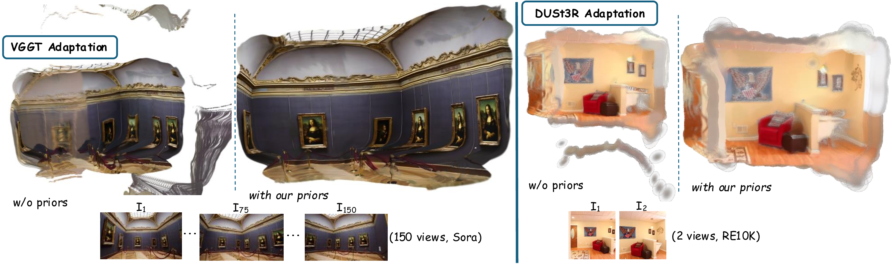
3D Gaussians have recently emerged as an effective scene representation for real-time splatting and accurate novel-view synthesis, motivating several works to adapt multi-view structure prediction networks to regress per-pixel 3D Gaussians from images. However, most prior work extends these networks to predict additional Gaussian parameters—orientation, scale, opacity, and appearance—while relying almost exclusively on view-synthesis supervision. We show that a view-synthesis loss alone is insufficient to recover geometrically meaningful splats in this setting.
We analyze and address the ambiguities of learning 3D Gaussian splats under self-supervision for pose-free generalizable splatting, and introduce G3Splat, which enforces geometric priors to obtain geometrically consistent 3D scene representations. Trained on RE10K, our approach achieves state-of-the-art performance in (i) geometrically consistent reconstruction, (ii) relative pose estimation, and (iii) novel-view synthesis. We further demonstrate strong zero-shot generalization on ScanNet, substantially outperforming prior work in both geometry recovery and relative pose estimation. Code and pretrained models are released on our project page.
G3Splat targets generalizable Gaussian splatting: instead of per-scene optimization, a feed-forward model predicts a dense set of per-pixel 3D Gaussians (means, scales, orientations, opacity, appearance) from a few input views.
- Overparameterization: Gaussians are richer than depth/points, but generalizable training often lacks corresponding geometric constraints.
- Geometric ambiguity: many different Gaussian configurations can render similarly, so photometric supervision can “explain images” without recovering geometry.
- Lack of heuristics: per-scene 3DGS relies on split/duplicate/prune heuristics; feed-forward predictors keep everything “alive”, amplifying failure modes.
We address this by adding a small set of geometry-minded priors that are lightweight, backbone-agnostic, and compatible with both full-rank 3DGS and surfel-like 2DGS. The goal is turning self-supervised learning into a problem that explicitly favors geometrically consistent splats.
- Orientation prior: encourages each Gaussian to behave like a tiny surface element—so orientations track local surface geometry rather than texture or view-synthesis quirks.
- Pixel-alignment prior: ties each predicted Gaussian back to its originating pixel, reducing structure–pose ambiguity and stabilizing pose-free reconstruction.
- Scale regularization (3DGS): discourages near-isotropic “blobs” in the full 3DGS setting, biasing Gaussians toward more surfel-like anisotropy when that improves geometric stability.
What changes “without priors” vs “with priors”?
In short: without priors, models can render well while learning unstable orientations/scales; with priors, the learned Gaussians become more surface-consistent, which supports reliable depth rendering, TSDF-fused meshes, and stronger relative pose estimation. The paper has the full breakdown, ablations, and comparisons.
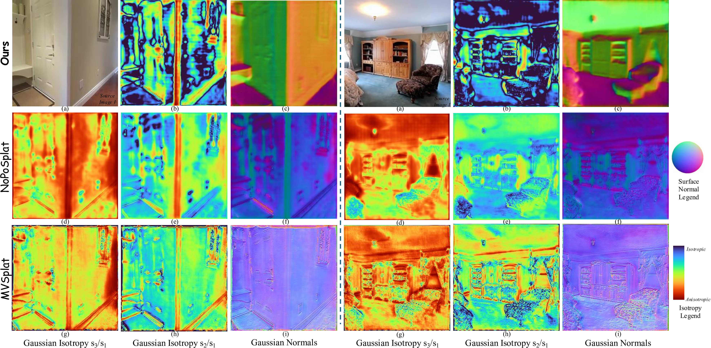
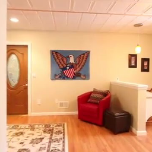
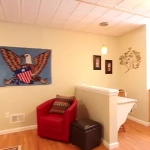
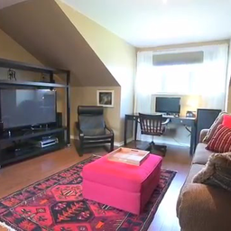
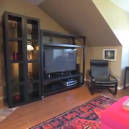
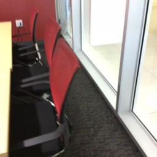
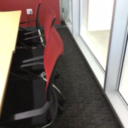
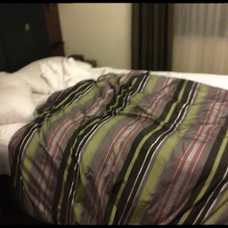
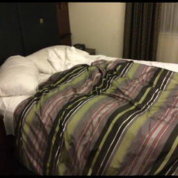
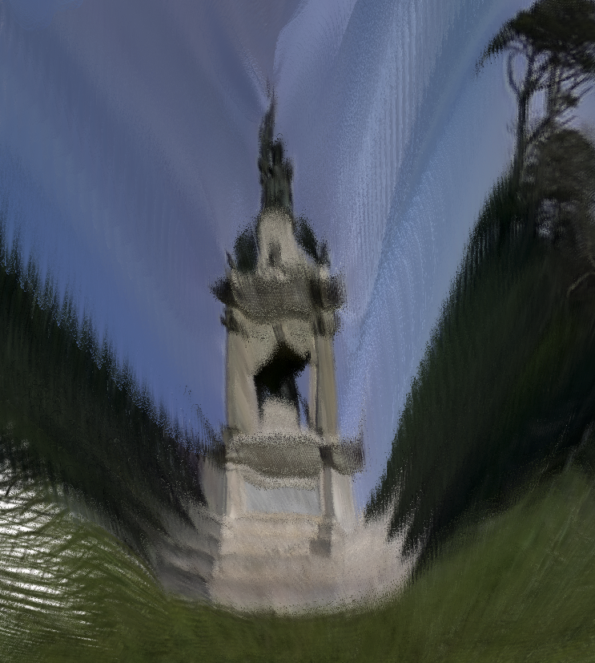
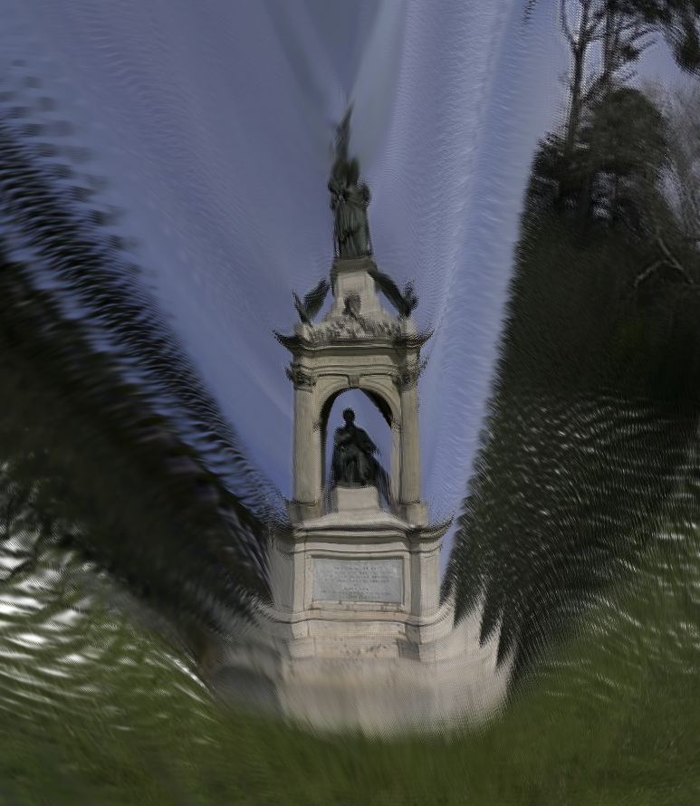
Geometry (Depth & Mesh)
We evaluate geometric consistency by rendering virtual depth maps from predicted Gaussians and also fusing them into meshes via TSDF-Fusion.
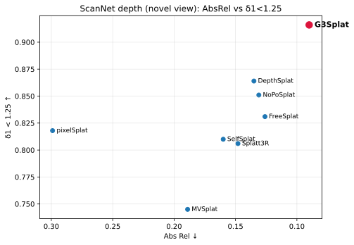
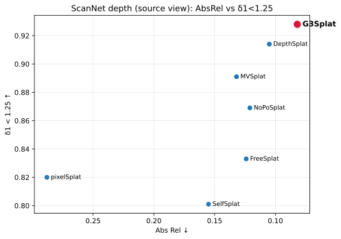
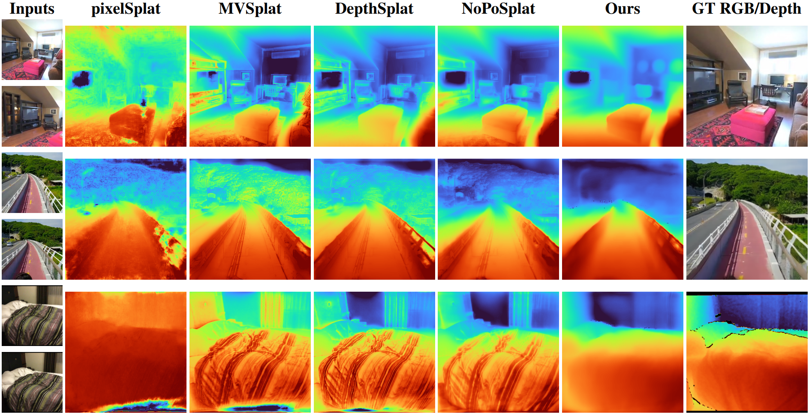
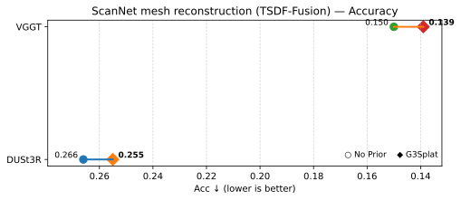
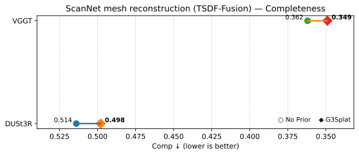
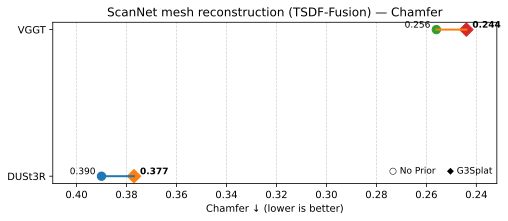
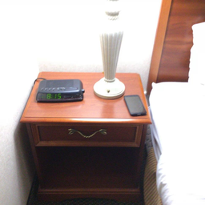
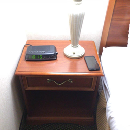
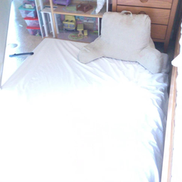
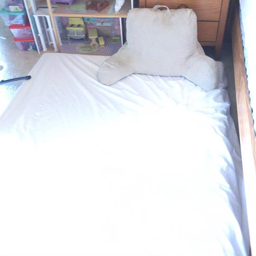
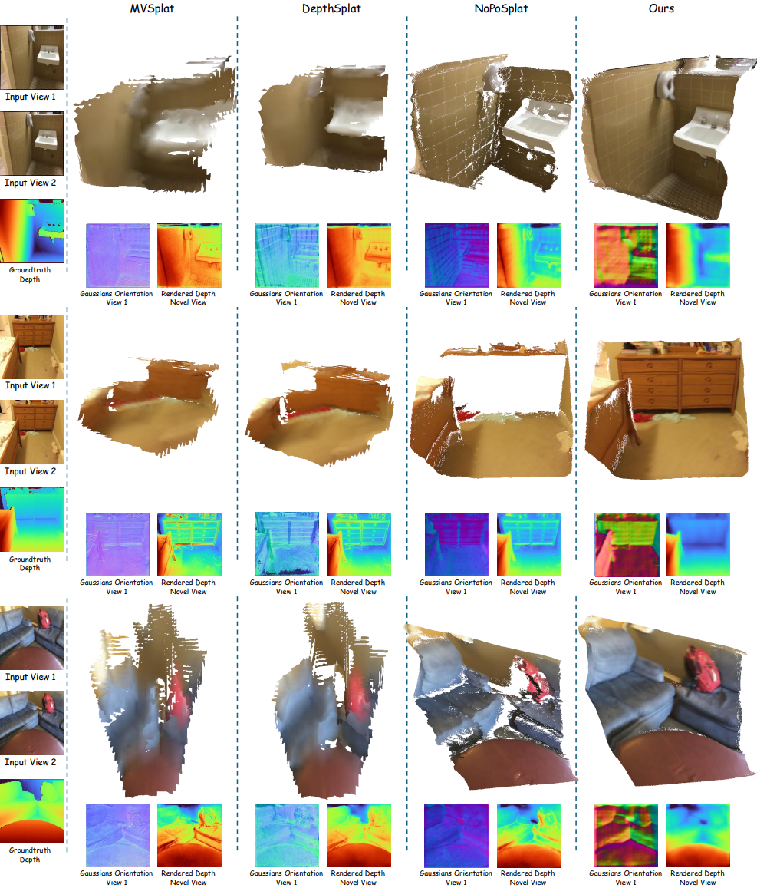
Relative Pose (AUC)
We report AUC of the cumulative pose error curve at three thresholds, across in-domain RE10K and zero-shot ScanNet/ACID.
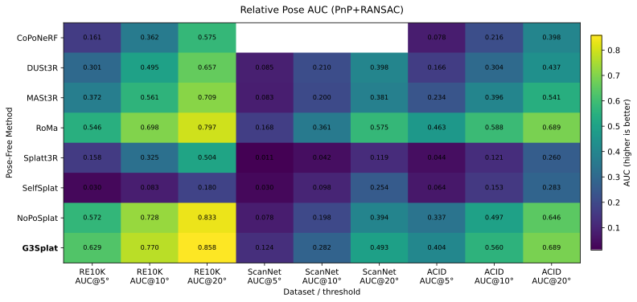
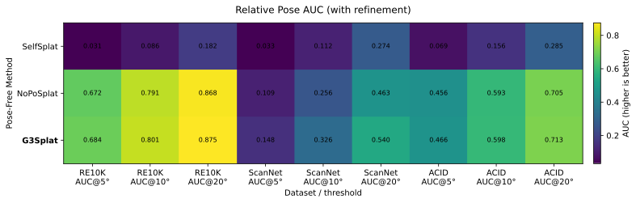
RE10K Novel-view Rendered RGB and Depth
ScanNet (cross-dataset, zero-shot) Novel-view Rendered RGB and Depth
@inproceedings{g3splat,
title={G3Splat: Geometrically Consistent Generalizable Gaussian Splatting},
author={Mehdi Hosseinzadeh and Shin-Fang Chng and Yi Xu and Simon Lucey and Ian Reid and Ravi Garg},
booktitle = {arXiv:2512.17547},
year={2025},
url={https://arxiv.org/abs/2512.17547},
}